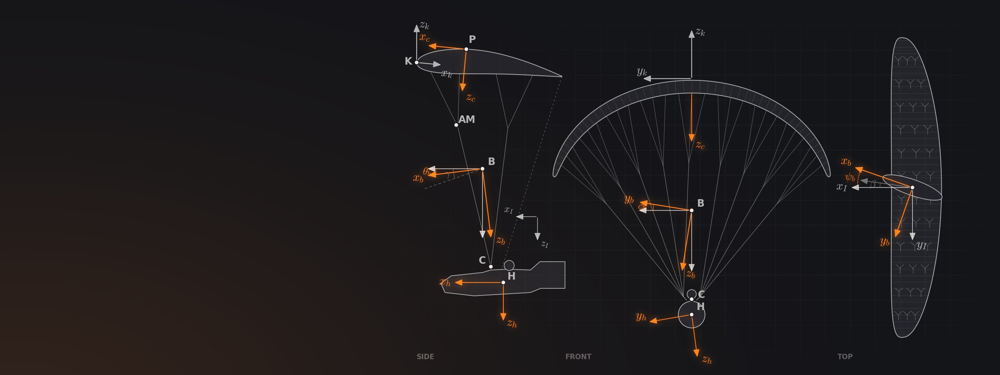
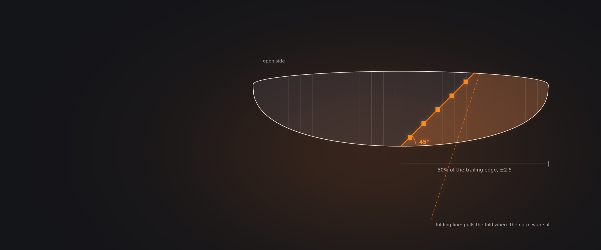

They are the four flight-behaviour classes of the European standard EN 926-2. Test pilots fly a fixed set of manoeuvres in calm air, including deliberate collapses, and each result is graded A to D; the wing takes its most demanding result. EN A is the most forgiving class and EN D the most demanding. The letter describes behaviour in those tests, not performance, and not how easily a wing collapses in real air.
Also asked as: What does EN B mean on a paraglider? · What is the difference between EN A and EN B? · What is a low B and a high B paraglider? · What is a CCC paraglider?
The European standard for paragliders. Part 1 tests strength; part 2 classifies flight behaviour.
EN 926-2 sets out the requirements and test methods for classifying a paraglider's flight safety characteristics [1]. The current edition is EN 926-2:2013+A1:2021, listed by national standards bodies as valid from 31 December 2021 [2]; its 2021 amendment changed how paragliders are classified [1], and a further revision has been out for public comment [3]. The tests are made by independent laboratories such as Air Turquoise in Switzerland [1][4]. EN 926-1 is the separate test of structural strength [4][2].
In Germany, wings are classified to the national airworthiness requirements, the LTF, which use the same A to D letters [5], and a modern classification sticker lists the EN parts and the German rule side by side [8].
From A, the most forgiving, to D, which demands precise and experienced piloting.
| Class | How the wing behaves | Who it is designed for |
|---|---|---|
| EN A | The most forgiving class: maximum passive safety and very forgiving flying characteristics. | All pilots, including students at any stage of training. |
| EN B | Good passive safety and forgiving flying characteristics. | All pilots; students only if the manufacturer recommends it. |
| EN C | Moderate passive safety, with potentially dynamic reactions to turbulence and pilot error. Recovery may need precise input. | Pilots who know the recovery techniques, fly actively and regularly, and understand what reduced passive safety means. |
| EN D | Demanding flying characteristics, with potentially violent reactions to turbulence and pilot error. Recovery needs precise input. | Pilots well practised in recovery, who fly very actively and have significant experience of turbulent air. |
The DHV adds rough guidance on airtime for choosing a class: fewer than about 15 to 20 hours a year suits A; about 20 to 30 hours suits B, but a high B wants no less than 50; C wants more than 50 hours a year plus safety training on that class; and D at least about 100 [7].
A rule of thumb from the German federation for choosing a class, not a requirement.
Sources [7]Two test pilots, calm air, around twenty-three manoeuvres. The most demanding grade sets the class.
According to the 2012 working draft of the standard, the flight test is flown by two pilots, one at the minimum declared weight and one at the maximum [6], in calm air with little wind and no turbulence [6]. Collapses are induced deliberately, by pulling lines on one side as fast as possible [6]. Each manoeuvre is graded on its own, and the wing's overall class is its most demanding single result [6][5]. A recent Air Turquoise sticker for an EN B wing shows the pattern: a mix of A and B results across about 23 test items, and B overall [8]. Every size is tested and certified separately [9].
The tests rate flight characteristics only, not performance [5].

After Frantisek Pavlousek, chapter 5. Schematic.
How easily the wing collapses in real air, how it compares within its class, or how it performs.
Even the working group that writes the standard sees the flight tests as comparisons under laboratory conditions rather than a guarantee of safety, according to the Swiss federation, which adds that test collapses on modern, heavily reinforced wings are drifting further from reality, especially from high B upwards [10]. The DHV's safety officer notes that real collapses are often more demanding than induced ones, in every class [11]. And because most modern wings score A on the 50 percent asymmetric collapse from trim speed, that single result says little when choosing a wing [12].
The guests on the show agree: treat the letter as a starting point, then read who the manufacturer says the wing is for, count the B results on a B report, and test-fly before you buy.
Labels for the real differences inside and above the four letters.
EN B covers a wide range. The Swiss federation splits it into a low B, for all pilots including students, and a high B for experienced, regular pilots, stable in calm air but able to surprise the pilot after a collapse [10]. The DHV says high-B wings cannot be recommended for pilots who fly irregularly [7].
Since the 2021 amendment, EN C wings may be certified using folding lines, extra lines that let the test pilot produce the required collapse on a wing that resists it [10][13]. That opened the class to two-liners, and EN C is increasingly made up of them [10][14].
CCC, the CIVL Competition Class, is the class for wings flown in top-level cross-country competitions. It builds on EN rather than replacing it: the wing must meet a 23 G load requirement, its flight tests are pass or fail rather than graded, and the speed system may shorten the front risers by no more than 140 mm [15].
Paraphrased from Paragliding Atlas episodes, never quoted, because the transcripts are automatic captions. Each card links to the chapter where it is said.
Certification safety and real safety are related but not the same, says Frantisek Pavlousek, chief designer at UP. A low B can be as safe in the air as an A, having missed the A on a single manoeuvre.
Frantisek Pavlousek Can performance run away from safety in a beginner wingThe certification collapse is pulled hands up, with no brake in hand and no reaction from the pilot, which he calls already outside reality. It also explains a design trick: the easiest way to turn a C on the full-speed collapse into a B is a slower trim speed.
Frantisek Pavlousek Reading an EN C test report properlyFolding lines in EN C let designers use genuinely stable airfoils, Tom Lolies says. EN B wings cannot use them, so their profiles must still collapse from the A lines, and he has seen EN C wings he considers safer than some EN Bs.
Tom Lolies Brake pressure, and the approach to a stallOn a B report, count the B results: that already tells a low B from a high B, says Alain Zoller of Air Turquoise, and many high Bs come from C designs, trimmed differently. His first rule is not to jump to the highest class in the hope of flying further, and to test-fly two or three candidates.
Alain Zoller Reading a test report as a buyerDo not choose a wing by any single test result, says Luc Armant of Ozone. Read who the manufacturer says the wing is for.
Luc Armant What to look at instead of a single resultThe explanation is rewritten in plain language from the sources listed here, which you can check for yourself. Government handbooks are used where they exist; manufacturer manuals, federations and test houses for what is specific to paragliders. Numbers worked out on this page rather than quoted are labelled as worked examples.
The guest cards add what was said on the show, paraphrased and linked to the chapter.
Draft: not yet reviewed. Spotted a mistake? Tell me and I will fix it.